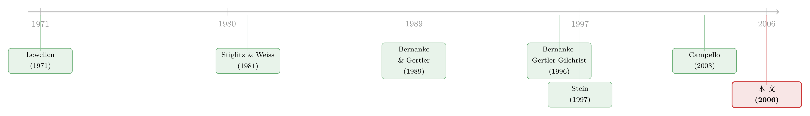

把好天气存进坏天气：多元化，是一张衰退里才兑现的「信用保单」
本文读的是 Dimitrov & Tice (2006, Review of Financial Studies)：在衰退里，那些只靠银行借钱的专业化 (focused) 公司，销售与存货的增长比同行里多元化 (diversified) 公司的同类业务部门掉得更狠——一进一出，工业调整后的销售增长差距高达 7.4%；而对那些有评级、不依赖银行的公司，这个差距消失了。多元化的价值，不在它平时怎么调配内部资金，而在它把现金流波动「熨平」之后，整家公司换来的那张更好的信用门票——一张只在信贷收紧时才被验票的保单。
1 一个被冷落的「好处」
提到企业多元化，金融学者脑子里第一个蹦出来的词，多半是 内部资本市场 (internal capital markets)。这是一条被翻来覆去研究了二十年的线：一家横跨好几个行业的集团，可以把稀缺的资金从一个部门挪到另一个部门，去喂某些项目、饿死另一些项目。Lamont (1997)、Shin and Stulz (1998)、Rajan, Servaes, and Zingales (2000) 都在找这种「交叉补贴 (cross-subsidization)」的痕迹——有人说它高效，有人说它是「黑暗面」，是部门经理们寻租的温床。
但 Stein (2003) 早就指出，多元化其实有两副面孔。
第一副面孔，就是上面说的「挪钱」——在既定的一笔资金里，腾挪、分配。
而第二副面孔，从 Lewellen (1971) 那篇老论文起就被点破了，却几乎没人认真去验：把几个相关性不完全的业务捆在一起，整家公司的现金流波动会下降，破产风险随之降低，于是它能更便宜、更容易地从外部借到钱。Stein 给这副面孔起了个名字，叫多元化的「更多钱 (more-money)」效应。
注意，这两件事是不一样的。「挪钱」说的是一块蛋糕怎么切；「更多钱」说的是蛋糕本身能做多大。前者讲资金在公司内部的再配置，后者讲整家公司面对外部资本市场时的议价能力。文献几乎把所有笔墨都泼在了第一副面孔上,而第二副面孔——多元化是否真的放松了信贷约束、并因此改变了公司在产品市场里的真实行为——几乎是一片空白。
这篇论文，要补的就是这块空白。
2 难题：你没法直接比「多元化」和「专业化」
直接拿多元化公司和专业化公司做对比，是一个经典的陷阱：组织形式本身是企业自己选的。
接着，一个自然的问题是：怎么验？
最朴素的做法，是找一堆专业化公司、一堆多元化公司，比一比谁借钱更顺、谁投资更稳。但这立刻撞上 内生性 (endogeneity) 的墙。在一个理性预期的世界里，公司在选择「要不要多元化」时，早把多元化的所有成本与好处算进去了。
更要命的是一个看似无懈可击的反驳：如果多元化除了「换来信用」之外没有别的成本，那么所有容易受信贷约束折磨的公司，都应该早早地把自己多元化、给自己上一道保险——于是你在数据里根本看不到「脆弱又专业化」的公司，对比也就无从谈起。
作者的回应分两层。其一，这个均衡不太可能成立，因为多元化确实有别的代价——Rajan, Servaes, and Zingales (2000)、Scharfstein and Stein (2000) 都说过，它会滋生代价高昂的代理问题（这也正是「多元化折价」的来源之一，关于把竞争这条暗线塞进折价的另一种解释，可参见《捆在一起发债：多元化折价里，被忽略的那条「竞争」暗线》）。其二——也是真正关键的一步——作者把识别的赌注，押在了商业周期 (business cycle) 上。
为什么是商业周期？因为衰退什么时候来、持续多久，没人能精确预判。既然连企业和银行都无法完全预见下一场衰退，那么企业在挑选组织形式时，就不会把「下一次信贷收紧」完整地计入决策。换句话说，周期的时点，相对于组织形式的选择，近似是外生的。这就把那道内生性的墙，凿开了一条缝。
3 识别策略：用衰退当「压力测试」，用评级当「安慰剂」
于是，整个实证设计可以这样读：
第一重对比，是时间上的（衰退 vs 非衰退）。 Bernanke and Gertler (1995)、Bernanke, Gertler, and Gilchrist (1996) 早就论证过，信贷约束在衰退里比在平时更紧。所以衰退就是一台天然的「压力测试机」：它周期性地拧紧整个经济的信贷阀门。论文背后的理论预测有两条腿——
- 净值 (net worth) 模型：Bernanke and Gertler (1989)。衰退里现金流和抵押品价值双双下滑，借款人净值下降、违约概率上升，于是 外部融资溢价 (external finance premium)（外部资金相对内部资金、因信息不对称而多付的那部分成本）抬高。而现金流波动更大的专业化公司，净值掉得更猛，溢价升得更高。
- 信贷配给 (credit rationing) 模型：Stiglitz and Weiss (1981) + Jaffe and Stiglitz (1990)。衰退之初货币政策收紧、银行准备金萎缩，银行宁可拒贷也不愿对低质量借款人涨息——于是信用质量边际的公司（专业化公司）会先被挤出信贷市场。
两条腿指向同一个方向：衰退会拉大专业化与多元化公司之间在信贷可得性上的差距。
第二重对比，是横截面上的（依赖银行 vs 不依赖银行）。 这是全文我最欣赏的一步，因为它把一个相关性的故事，逼成了一个近乎安慰剂检验的设计。作者把公司分成两组：
- 银行依赖型 (bank-dependent)：既没有债券评级、也没有商业票据评级的公司——它们除了银行别无去处，是「受约束」的一组。
- 银行独立型 (bank-independent)：有债券评级或商票评级的公司——它们能直接上公开市场融资，是「不受约束」的一组（公司为什么宁愿借公开债来摆脱银行的眼睛，可顺带参见《借公开债，是为了躲开银行的眼睛》）。
逻辑闭环就在这里：如果观察到的差异真的来自信贷约束，那么「专业化 vs 多元化」的周期敏感性差异，只应该在银行依赖型这一组里出现；在银行独立型那一组里，不管你是专是混，都不该被周期卡住脖子。这个对比，几乎是把「信贷约束」这个机制单独拎出来做了一次证伪——如果在不受约束的组里也看到同样的差异，那这套故事就垮了。这种「拿另一种企业特征、用跨期与横截面双重对比来识别」的思路，最接近 Campello (2003) 对资本结构所做的工作。
这里有一个微妙但重要的设计取舍：作者刻意用销售增长和存货增长作为「真实行为」的代理，而不是直接看融资量。理由是——存货的调整成本远低于固定资产或 R&D [Hubbard (1998)]，所以存货增长对信贷松紧的波动最敏感、最「诚实」。
4 数据：把十八年切成八个两年窗口
数据的骨架来自 1996 年 Compustat 业务分部 (business segment) 文件，覆盖 1978–1996。这里有个值得一提的细节：2000 年 FASB SFAS 131 修改了分部报告口径，Compustat 重述后的数据只能回溯到 1985 年——但作者要研究的两场硬衰退都发生在 1980 年代初，所以他们坚持用未重述的原始 1996 版分部文件，宁可数据「旧」也要保住样本期。这是一个把识别需求放在数据便利之上的选择。
- 观测单位：分部—期间 (segment-period)。
- 专业化的定义：上一财年只报告一个分部 = 专业化；两个及以上 = 多元化。
- 样本期切法：用不重叠的两年窗口。
1979–1980、1981–1982、1990–1991划为衰退期（对应三场 NBER 衰退）；1983–84、1986–87、1988–89、1992–93、1994–95为非衰退期（1982 与 1990 间年数是奇数，作者舍掉了 1985）。用两年窗口的好处，是把一场跨日历年的衰退当成一个事件，而非两个独立年份。 - 最终样本：层层过滤后剩
20,542个分部—期间观测，其中专业化10,741、多元化9,801。 - 银行依赖的分组：用 S&P 债券评级与 Moody's 商票评级判定有无评级。
层层的样本筛选——剔金融与公用事业、剔分部销售之和与公司总销售差异超 1% 的、剔起始销售低于 2001 年美元 2000 万的极小分部、要求行业里至少有一家专业化公司和一个多元化公司的分部——都指向同一个目的：让「行业调整」这件事变得可比。所有变量按一阶差分式的两年增长率计算，并在 1% 和 99% 处缩尾。
5 主要结果：7.4% 的剪刀差，和一个消失的差异
现在揭晓那个核心数字。
在衰退里，银行依赖型的专业化公司，相对于银行依赖型多元化公司的同类竞争分部，工业调整后的销售增长净损失 7.4%。这个 7.4% 是怎么来的？是一进一出拼出来的剪刀差：
- 银行依赖型专业化公司的平均工业调整销售增长，在衰退里下跌
4.5%； - 而银行依赖型多元化公司的同类分部，在衰退里反而上升
2.9%。
4.5% + 2.9% ≈ 7.4%。一边在退，一边在进，差距才显得如此刺眼。
这个结果对加入公司与分部 固定效应 (fixed effects)、加入滞后销售增长作控制变量都稳健；也对一套 工具变量 (instrumental variables, IV) 程序稳健——后者专门用来回应「专注度与销售增长的周期敏感性之间可能存在内生联系」这个担忧。
接着是存货那条腿。在公司层面，作者发现：衰退里制造业公司的存货增长，对银行依赖型专业化公司掉得更多——而且是在控制了同期销售增长之后。这一点很要紧：如果存货掉只是因为东西卖不动（需求侧），那控制住销售增长后效应就该消失；它没有消失，说明掉的是信贷侧的那一块。
而真正让整套故事站住脚的，是那个消失的差异：在银行独立型（有评级）的公司里，专业化与多元化在任何检验中都没有显著差异。安慰剂没有反应——这正是信贷约束解释所预期的。
顺带一提，描述统计本身就已经透露了机制：样本里专业化公司的现金—资产比显著更高（衰退里从 12.74% 降到 9.79%），印证了它们更脆弱、更需要靠自有现金垫底；而多元化公司的经营现金流波动确实更低——这正是 Lewellen (1971) 那条「更多钱」逻辑的微观证据。
6 文献脉络
把这条线捋一捋，它其实是两股河流的汇合。
一股，是多元化与内部资本市场这条河。源头是 Lewellen (1971)——他第一个从纯财务角度论证：哪怕只是适度的多元化，也能带来破产风险的大幅下降。但此后三十年，文献的兴趣几乎全转向了 Stein (1997) 开创的「内部资本市场」视角——钱在集团内部怎么挪、挪得高效还是低效（Lamont 1997；Shin and Stulz 1998；Rajan, Servaes, and Zingales 2000；Scharfstein and Stein 2000 的「黑暗面」）。Lewellen 那条「更多钱」的支流，反而被晾在了一边。
另一股，是信贷渠道与商业周期这条河。Bernanke and Gertler (1989) 的净值模型、Stiglitz and Weiss (1981) 的信贷配给、到 Bernanke, Gertler, and Gilchrist (1996) 的金融加速器——它们共同论证了：信贷约束在衰退里会变紧，而且对信用质量边际的借款人咬得最狠。

Dimitrov and Tice (2006) 站的位置，恰好是这两条河的交汇口：它借用信贷渠道文献的「衰退=信贷收紧」这台机器，去激活多元化文献里那条被冷落的「更多钱」支流，并用 Campello (2003) 式的跨期×横截面双重对比把机制钉死。它的贡献，不是发现「多元化能借到更多钱」这件事本身——而是证明了这件事会真实地改变公司在产品市场里的行为，并且只在信贷收紧时才显形。关于衰退如何通过信贷再配置悄悄改写实体经济的产业版图，可参见《为什么衰退总在悄悄改写一国的产业版图？——信贷再配置那条暗线》；而把「多元化公司里债务约束如何被重新分配」单独拆开看，则可参见《杠杆这把「刀」，砍向了谁？》。
7 评论与延伸（Q&A + 研究方向）
(a) 几个可能的疑问
Q：这篇文章和「内部资本市场」那一大堆论文，到底区别在哪？
区别在「钱从哪来」。内部资本市场文献研究的是多元化公司内部资金的再配置——一块固定的蛋糕怎么切。这篇文章研究的是多元化如何改善整家公司对外部资本市场的议价能力——蛋糕本身能做多大。作者特意用「专业化 vs 多元化在衰退里的敏感性差异」来捕捉外部信贷可得性的差异，而不是内部腾挪：因为衰退让所有分部的内部资金都缩水，若差异仍存在，那它来自外部融资，而非内部补贴。
Q：用「衰退近似外生」来对付组织形式的内生性，可信吗？
部分可信，但不彻底。它的力量在于：衰退的时点与时长确实难以精确预判，所以公司不太可能为了对冲「下一场衰退」而临时多元化。但它挡不住一种慢变量内生性——长期信用质量差的公司，可能系统性地倾向于既多元化、又在衰退里表现稳健，二者都由某个未观测的「质量」驱动。作者用 IV 和固定效应去堵这个口子，但 IV 的工具有效性始终是这类设计的软肋。
Q：「银行依赖 vs 银行独立」的分组会不会本身就有偏？
会有测量误差。作者只用 S&P 债券评级和 Moody's 商票评级，那些只被 Moody's 评了债、或只被 S&P 评了商票的公司会被误判为银行依赖。不过作者引用 Odders-White and Ready (2006)——1998 年 98% 有 Moody's 债评的 NYSE 公司也有 S&P 债评——来论证误分类的量级很小。这是一个诚实但非零的担忧。
Q：为什么用销售增长和存货增长，而不是直接看融资量或投资？
因为这两个变量对信贷松紧最「诚实」。存货的调整成本远低于固定资产或 R&D（Hubbard 1998），所以它对短期信贷波动反应最快；而在控制了同期销售增长后，存货还掉得更多，就排除了「纯需求下滑」的解释，把信贷侧的效应单独逼了出来。直接看融资量反而会混入需求与供给的纠缠。
Q：那个 2.9% 的「上升」——衰退里多元化公司销售反而涨，是不是太反直觉了？
它是工业调整后的相对数，不是绝对增长。绝对地看，所有公司在衰退里都在收缩；但相对于同行业中位数，多元化分部的表现没那么差，于是工业调整后呈现为正。换句话说，
2.9%不是「逆势增长」，而是「比同行更扛得住」——它衡量的是相对韧性，正是信贷可得性差异的体现。
Q：这个结论对今天的市场还成立吗？样本毕竟停在 1996 年。
机制大概率仍在，但量级可能变了。1980 年代两场衰退的货币政策收紧极猛，信贷配给效应被放大；而如今直接融资渠道（债券、私募信贷）远比那时发达，纯「银行依赖」的上市公司比例下降，这条渠道的边际重要性可能被稀释。这恰恰是一个值得用新数据重做的方向。
(b) 几个可能的研究问题与提案
1. 把「更多钱」效应搬到公司债市场来验。
【经济故事】本文证明了多元化改善信贷可得性、并改变真实行为，但证据落在销售/存货上。一个更直接的检验是：多元化公司在衰退里发债的信用利差是否真的扩得更少、发行量掉得更少？这能把「更多钱」效应从「真实行为」一路追到「价格」。 【可行性】高。数据用 TRACE + Mergent FISD（发行层面）+ Compustat 分部数据，识别仍用 NBER 衰退 × 多元化交互。难点是 TRACE 只覆盖 2002 年后，正好错开本文样本期——但这反而让它成为「机制是否延续到现代」的天然检验。
2. 外资持有人会不会替代「多元化」这张保单？
【经济故事】多元化是企业内部熨平现金流波动、换取信用的方式。但如果一家专业化公司有大量外资机构持有人，它是否能通过更深的全球融资渠道，达到类似的「衰退里不被卡脖子」的效果？即外部投资者基础与内部多元化在「放松信贷约束」上是替代还是互补。 【可行性】中。数据用 FactSet/13F 机构持仓 + 跨国外资持股（如 Koijen-Yogo 式需求体系），识别可借鉴本文的衰退 × 持有人结构交互。难点在外资持股本身高度内生于公司质量，需要类似 MSCI 指数纳入这样的准外生冲击。
3. 信贷配给 vs 净值溢价：能不能把两条腿拆开？
【经济故事】本文的两条理论腿——Bernanke-Gertler 的净值溢价、Stiglitz-Weiss 的信贷配给——预测方向一致，所以实证上无法区分。但它们的政策含义截然不同：前者是价格问题（溢价），后者是数量问题（被拒贷）。 【可行性】中。可用贷款层面数据（DealScan + 银行内部拒贷记录），看衰退里专业化公司是「被涨息」还是「被直接拒」。难点是拒贷数据极难获得，多数只能观察到成交的贷款（幸存者偏差）。
4. 多元化的「保单」在不同货币政策体制下值多少？
【经济故事】本文三场衰退里，前两场（1980、1981–82）伴随极紧的货币政策，第三场（1990–91）相对温和。一个自然推论是：「更多钱」效应的强度应随货币政策收紧程度而变化。把货币政策立场作为调节变量，能直接检验信贷配给机制。 【可行性】高。数据现成（联邦基金利率、Romer-Romer 货币政策冲击），识别是三重交互（衰退 × 多元化 × 货币紧缩）。这几乎是本文的一个直接延伸，doable。
8 我的判断与参考文献
贡献。 这篇论文最漂亮的地方，是用一个极简的设计——衰退当压力测试、评级当安慰剂——把一个早在 1971 年就被提出、却几乎无人实证的旧命题（多元化的「更多钱」效应）干净地验了出来。它没有去和汗牛充栋的「内部资本市场」文献争论谁高效谁低效，而是绕到侧面，证明了多元化还有另一种改变公司行为的方式：不是挪钱，而是换来更好的外部信用。7.4% 的剪刀差 + 银行独立组里那个「消失的差异」，构成了一个相当有说服力的双重证据。
对识别的担忧。 我有两点保留。其一，「衰退近似外生」只挡得住快变量内生性，挡不住「未观测的长期质量同时驱动多元化倾向与衰退韧性」这种慢变量——IV 的工具有效性这里始终是个黑箱。其二，把「有无评级」当作「是否依赖银行」的二元划分太粗：评级是一个连续的信用质量谱，二元化会把大量边际公司错分，而误分类恰恰会削弱而非制造差异——所以从这个角度，作者的结果可能是被低估的下界，这反而是好消息。
后续想看到什么。 我最想看的，是把这条「更多钱」渠道直接拉到信用价格上去——在衰退里，多元化公司的债券利差是否真的扩得更少、发行是否更顺。本文止步于销售与存货这些真实行为变量，但真正能把机制钉死的，是价格。如果在现代公司债数据里这条渠道依然显形，那么 Lewellen 那条沉睡了半个世纪的支流，就值得被重新放回多元化研究的主航道。
参考文献
- Bernanke, B., and M. Gertler (1989). Agency Costs, Net Worth, and Business Fluctuations. American Economic Review 79, 14–31.
- Bernanke, B., and M. Gertler (1995). Inside the Black Box: The Credit Channel of Monetary Policy Transmission. Journal of Economic Perspectives 9, 27–48.
- Bernanke, B., M. Gertler, and S. Gilchrist (1996). The Financial Accelerator and the Flight-to-Quality. Review of Economics and Statistics 78, 1–15.
- Campello, M. (2003). Capital Structure and Product Market Interactions: Evidence from Business Cycles. Journal of Financial Economics 68, 353–378.
- Dimitrov, V., and S. Tice (2006). Corporate Diversification and Credit Constraints: Real Effects across the Business Cycle. Review of Financial Studies 19(4), 1465–1498.
- Hubbard, R. G. (1998). Capital-Market Imperfections and Investment. Journal of Economic Literature 36, 193–225.
- Lamont, O. (1997). Cash Flow and Investment: Evidence from Internal Capital Markets. Journal of Finance 52, 83–109.
- Lewellen, W. (1971). A Pure Financial Rationale for the Conglomerate Merger. Journal of Finance 26, 521–537.
- Odders-White, E., and M. Ready (2006). Credit Ratings and Stock Liquidity. Review of Financial Studies 19, 119–157.
- Rajan, R., H. Servaes, and L. Zingales (2000). The Cost of Diversity: The Diversification Discount and Inefficient Investment. Journal of Finance 55, 35–80.
- Scharfstein, D. S., and J. C. Stein (2000). The Dark Side of Internal Capital Markets: Divisional Rent-Seeking and Inefficient Investment. Journal of Finance 55, 2537–2564.
- Shin, H., and R. M. Stulz (1998). Are Internal Capital Markets Efficient? Quarterly Journal of Economics 113, 531–552.
- Stein, J. C. (1997). Internal Capital Markets and the Competition for Corporate Resources. Journal of Finance 52, 111–133.
- Stiglitz, J. E., and A. Weiss (1981). Credit Rationing in Markets with Imperfect Information. American Economic Review 71, 393–410.